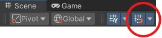

Enviornment Building
Enviornment are contained within a dedicated scene. This scene is then specified for Tasks via name.
Scene Creation
The first step to creating a new enviornment is to add a new scene to your unity project. After this, dit is important to register your scene in the build settings. Navigate to File > Build Settings and select Add Open Scenes.
Important
Regiseting a scene in build settings is essential to be able to be able to use it in Tasks.
Building with Prefabs
The reccomended way to build enviornments is with modular prefabs. By default the Nursing in Unity Simulation ships with many useful prefabs for creating and populating a hospital enviornment.
Prefabs can be found by navigating the file system to Assets > Prefabs.
Reccomendations
The Nursing In Unity Simulation provides users complete freedom while desinging scenes, however, this section will offer reccomendations for designing efficient, modular, enviornments.
Settings
While not necesary, enabling grid snapping is reccomended. The exact snapping pattern depends on the size of the prefabs being users, however 0.05 works with most prefabs. Grid snapping can be enabled and configured by selecting the coresponding button in the Scene Pane as seen below.
{kind=link}
Orginization
Another optional but helpful step is organizing scene componants into subgroups via the Game Object Hiearchy. Below is an example:
Scene
├── Ceiling
| └── ...
├── Hallways
│ ├── Structure
| │ └── ...
│ ├── Furniture
| │ └── ...
│ └── Lights
| └── ...
├── Operating Room
│ ├── Structure
| │ └── ...
│ ├── Furniture
| │ └── ...
│ └── Lights
| └── ...
└── Waiting Room
├── Structure
│ └── ...
├── Furniture
│ └── ...
└── Lights
└── ...
Not only does this make the design proccess easier, but it allows for modular designs that allow for portable, duplicatable, and disableable rooms.